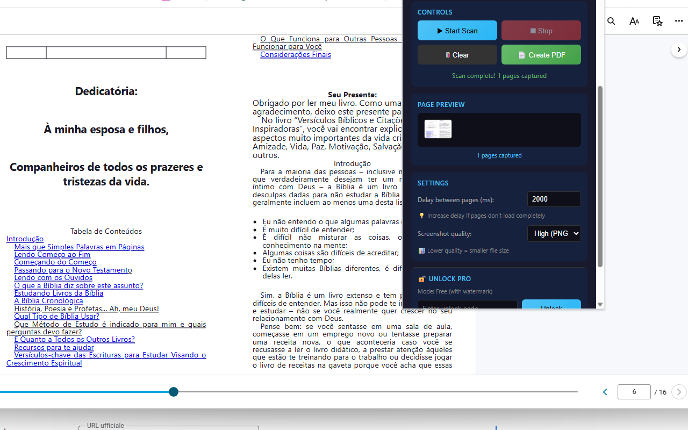
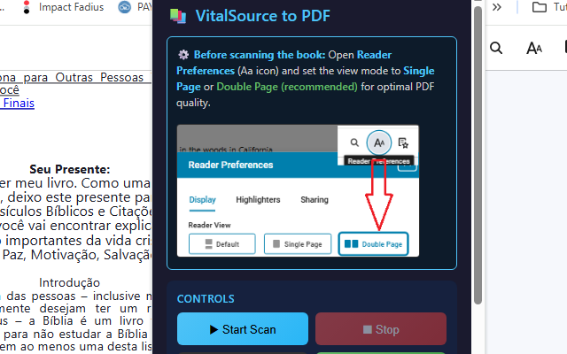

VitalSource to PDF Saver Extension
Save your VitalSource Bookshelf eTextbooks as PDF files for convenient offline reading 📚. With VitalSource to PDF Saver, you can capture your digital textbooks and create high-quality PDF documents that you can read anywhere, anytime—even without an internet connection. Whether you're a student preparing for exams, a professional needing reference materials, or simply someone who prefers reading PDFs, this extension transforms your VitalSource books into portable documents in just a few clicks.
The extension works by automatically scanning through your book pages, capturing high-quality screenshots, and combining them into a single PDF file. It's intelligent enough to detect duplicate pages (especially useful in Double Page view mode) and skip them automatically. The entire process happens right in your browser with a sleek, professional dark-themed interface that shows real-time progress and page previews.
One of the standout features is the automatic page navigation ⚡. Simply start the scan and the extension will click through every page of your book automatically, capturing each one until it reaches the end. No need to manually turn pages or monitor the process—just start it and let it run. The smart duplicate detection ensures you won't get repeated pages, even when using VitalSource's Double Page viewing mode.
Quality matters when it comes to your study materials. That's why VitalSource to PDF Saver offers flexible quality settings 📊. Choose between High (PNG), Medium (JPEG 92%), or Low (JPEG 80%) quality depending on your needs. Need crystal-clear text for detailed diagrams? Use High quality. Want a smaller file size for easier sharing? Choose Low quality. The extension also intelligently scales images to A4-like dimensions without any distortion, ensuring your PDFs look professional and are easy to read.
📖 How to Use
- Install the extension from the Chrome Web Store
- Open your book on VitalSource Bookshelf (bookshelf.vitalsource.com)
- Go to Reader Preferences (Aa icon) and select "Single Page" or "Double Page" view (recommended)
- Click the extension icon to open the interface
- Adjust settings if needed (delay, quality)
- Click "Start Scan" and wait for the automatic capture to complete
- Click "Create PDF" to download your book as a PDF file
📷 Screenshots


✅ Features
- 📚 Automatic page scanning - captures your entire book automatically
- 🔄 Smart duplicate detection - skips repeated pages in Double Page view
- 📄 High-quality PDF output - professional margins and proper orientation
- ⚙️ Flexible quality settings - High (PNG), Medium, or Low (JPEG)
- ⏱️ Adjustable delay - customize timing for slower connections
- 👁️ Real-time preview - see captured pages as thumbnails while scanning
- 📐 Smart scaling - images scaled to A4-like dimensions without distortion
- 💾 Persistent storage - pages saved between sessions
- 🎨 Professional dark theme interface
- ⏹️ Stop anytime - pause scanning whenever you need
- 🆓 Free tier available with watermark
- 💎 PRO version - clean PDFs without watermark
🎯 Perfect For
- Students: Create offline copies of textbooks for exam preparation
- Researchers: Archive reference materials for long-term access
- Professionals: Keep important technical books accessible offline
- Travelers: Read your textbooks without internet connection
- Accessibility: Use with PDF readers that offer better accessibility features
💡 Pro Tips
- Use "Double Page" view mode for optimal PDF quality
- Increase delay (2000-3000ms) if pages don't load completely
- Use "High (PNG)" quality for best text clarity
- Don't switch tabs while scanning is in progress
- Make sure your internet connection is stable during scanning
- For large books, the scanning process may take several minutes
🔒 Privacy & Security
Your privacy is protected. VitalSource to PDF Saver processes everything locally in your browser—no data is sent to external servers. There's no tracking, no analytics, and no user accounts required. The extension only accesses the VitalSource pages you're viewing, and all captured images and PDFs stay on your computer. It's transparent, secure, and respects your privacy completely.
⚠️ Important Notice
This extension is intended for personal backup purposes only. Please respect copyright laws and the terms of service of VitalSource. Only use this tool for books you have legitimately purchased or have access to through your institution.
With VitalSource to PDF Saver, accessing your textbooks offline becomes simple and convenient. No complicated setup, no coding required—just install, configure your view settings, and start capturing. Your study materials, available anywhere, anytime. 🚀
View on Chrome Web Store →